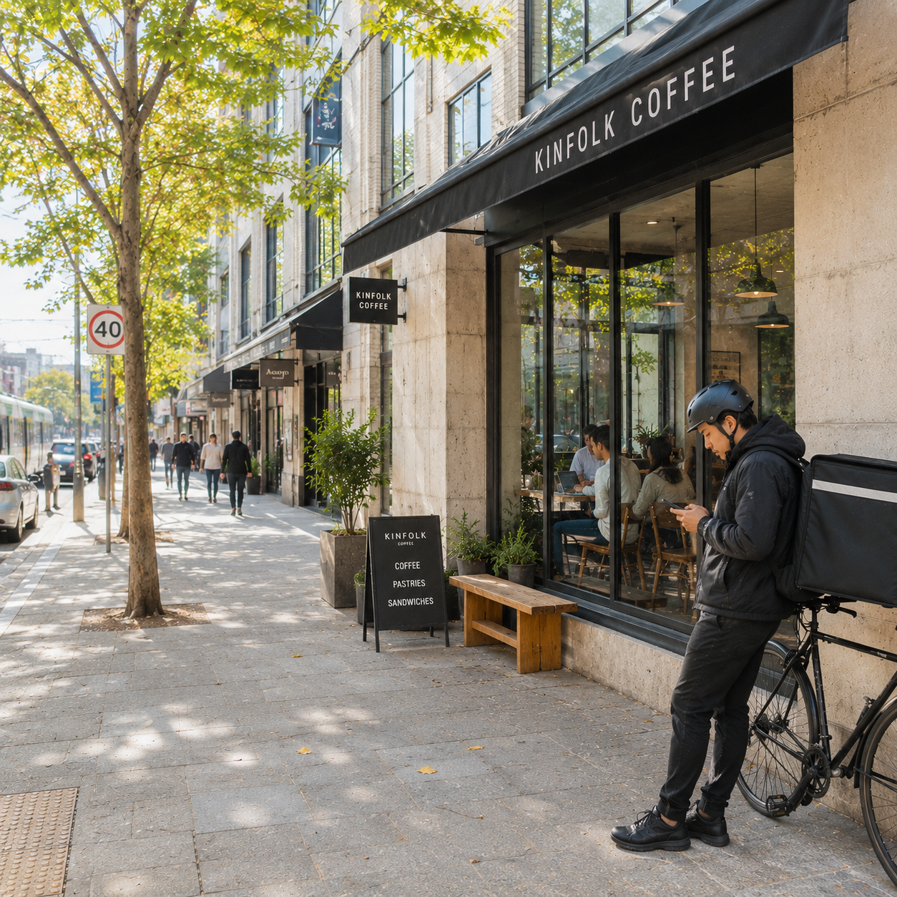

+2
Outside the café, the street reflects a quieter but more structural shift since 1977. Rising commercial rents and gentrification have reshaped once-local neighbourhoods, gradually displacing independent businesses in favour of standardized chains and high-turnover retail. The café itself exists within this economic pressure, part of a landscape where identity is increasingly curated by property value and branding rather than community continuity. Out front, a delivery driver waits on a phone-driven gig platform, moving between fragmented service jobs that didn’t exist in 1977 at this scale—an example of how the modern city is now held together by on-demand labour and algorithmically assigned work.